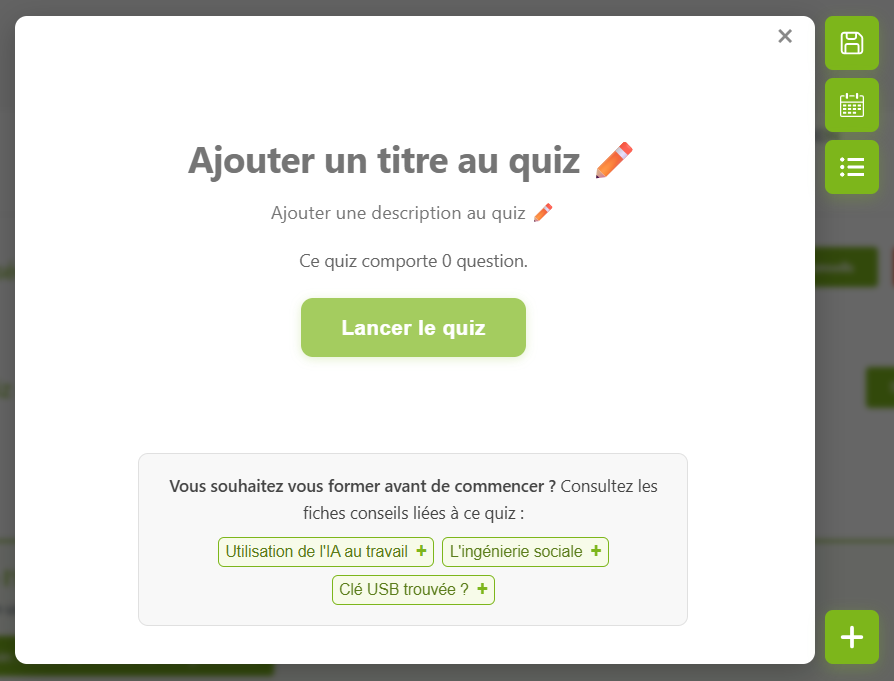

L'éditeur de quiz : on modifie le quiz directement sur son rendu final.
Pour mon stage de 1re année au CESI, j'ai rejoint la direction des systèmes d'information de Flers Agglo, la communauté d'agglomération du Pays de Flers, de mai à juillet 2025.
J'y ai travaillé sur deux applications internes pour les agents de la collectivité : le module de quiz de cybersécurité de l'intranet, un projet déjà en cours, puis Ideabox, une boîte à idées que j'ai créée de A à Z.
Les deux sont faits en Vue.js 3 et Express.js avec une base MySQL, et je les ai suivis jusqu'à la mise en production.